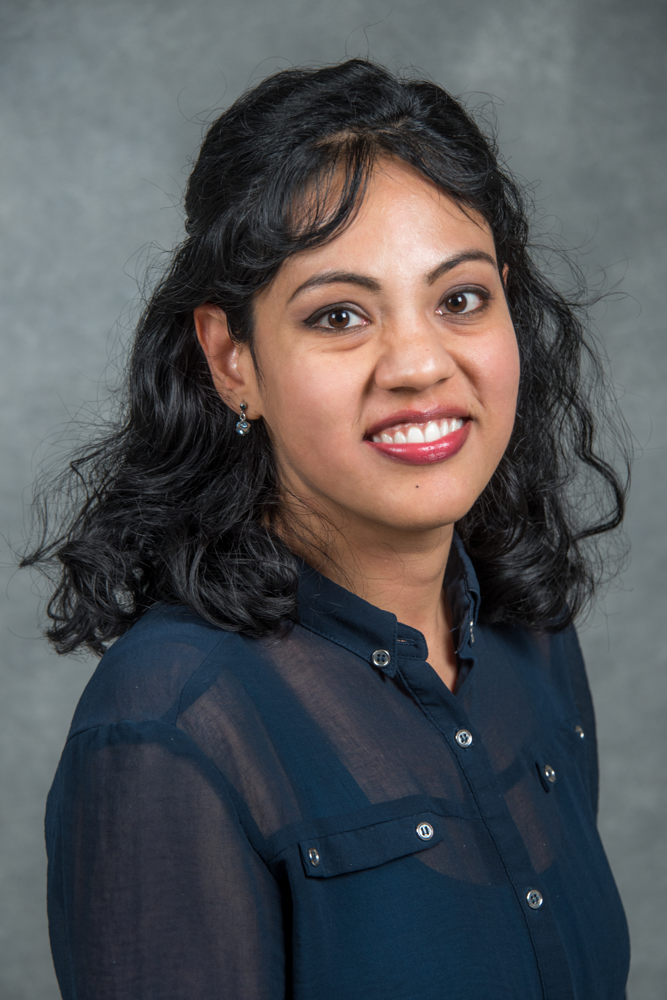

Mariam Kiran
R&D Lead and Computer Scientist
Scientific Networking Division
Energy Science Network Facility (ESnet)
Lawrence Berkeley National Laboratory
1 Cyclotron Road
Lawrence Berkeley National Laboratory
Berkeley, California, 94720
Email: mkiran(at)lbl(dot)gov
My research lies at the intersection of deep (and machine) learning and computer networking
for
building Self-driving Networks.
My team and I investigate bringing scalable, deployable deep learning, reinforcement learning, clustering
techniques, swarm and agent-based methods to real world
infrastructure challenges for edge and HPC centers.
I am the recipient of the DOE ASCR Early Career Award 2017. I
lead the AI research in Networking Lab (abbreviated (DAPHNE lab)).
I lead the research in developing NetPredict, NetGraf, INDIRA and Hecate for machine learning packages for network monitoring and traffic engineering solutions.
I received the N2Women Rising Stars Award in 2021 and a Senior Member of IEEE and ACM.
Previously I was selected as UK Royal Society Scientist for Westminster,
Fretwell-Downing Prize, and in addition to US funding, received UK and EU
funding for my work on agent-based modeling (FLAME) and cloud
computing. I also published a book titled 'X-Machines for Agent-Based Modeling: FLAME Perspectives' available on Amazon.
CV (Updated June 2020) * Bio * Twitter * Github *
GoogleScholar * Blog
Awards
- 2021: DOE Award for 5G self-driving Network.
- 2021: Selected as one of 10 N2Women Rising Stars Worldwide.
- 2020: Part of Finalist team for R&D Awards for ESnet Portal
- 2017: DOE Early Career Award 2017-2022 for "Large-scale Deep Learning for Intelligent Networks"
- 2016: Royal Society Award for Researcher in Residence at Westminster (UK Parliament)
- 2007: Fretwell Downing Prize across Engineering Faculty (University of Sheffield, UK)
Professional activities
- Workshop Organizer INDIS 2021
- PC Member for NAS 2021
- Mentor at N2Women Workshop at SigComm 2021
- TPC Taurin 2021 SigComm Workshop
- PC member HPC Asia 2020-Current
- Supercomputing Workshop INDIS co-organizer 2020-Current
- Senior Member of IEEE 2020-Current
- Member of ACM 2018-Current
- Fellowship co-chair for N2Women for improving women researchers at Networking Conferences (2018-2020)
- Associate Editor, IEEE Networking Letters
- Elected member of COMSES Network for OpenABM (agent-based modelling) at Arizona State University
- Programme Committee duties at SciPy2018-2019, SC17, ICML workshop 2018
- Reviewer for proposals submitted to NSF and EU
- Instigated the ACM-Women professional chapter for UK